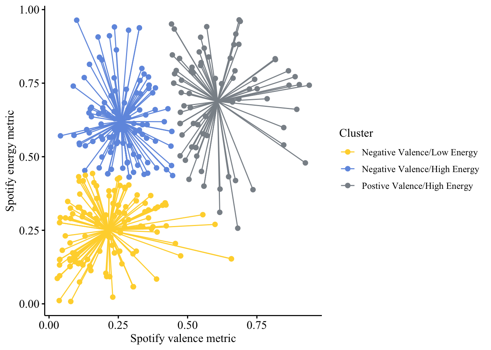
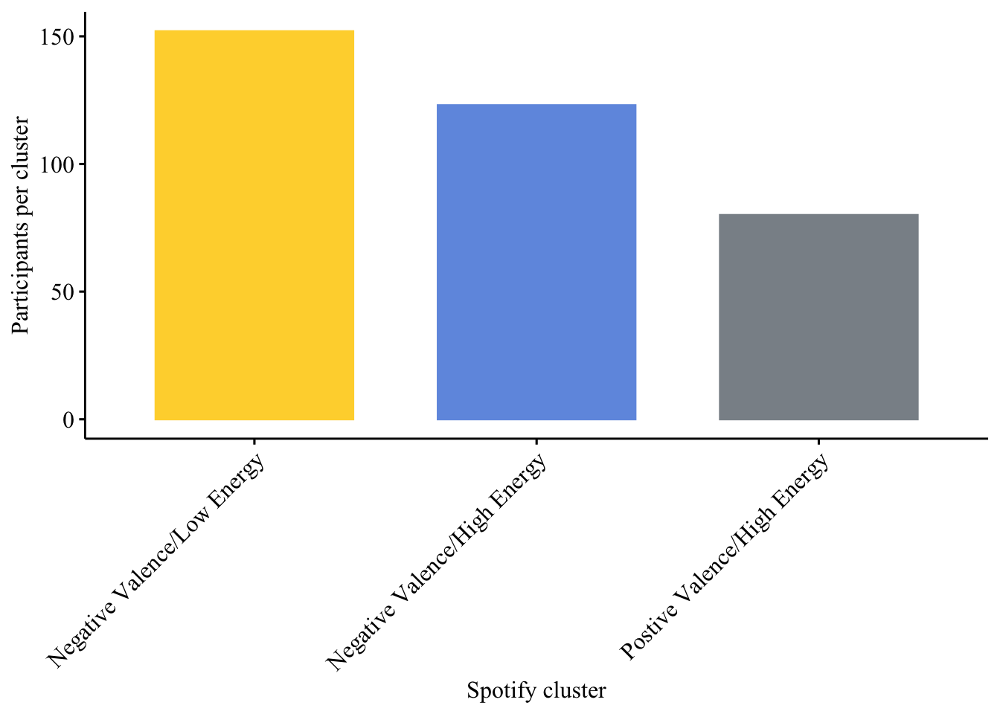
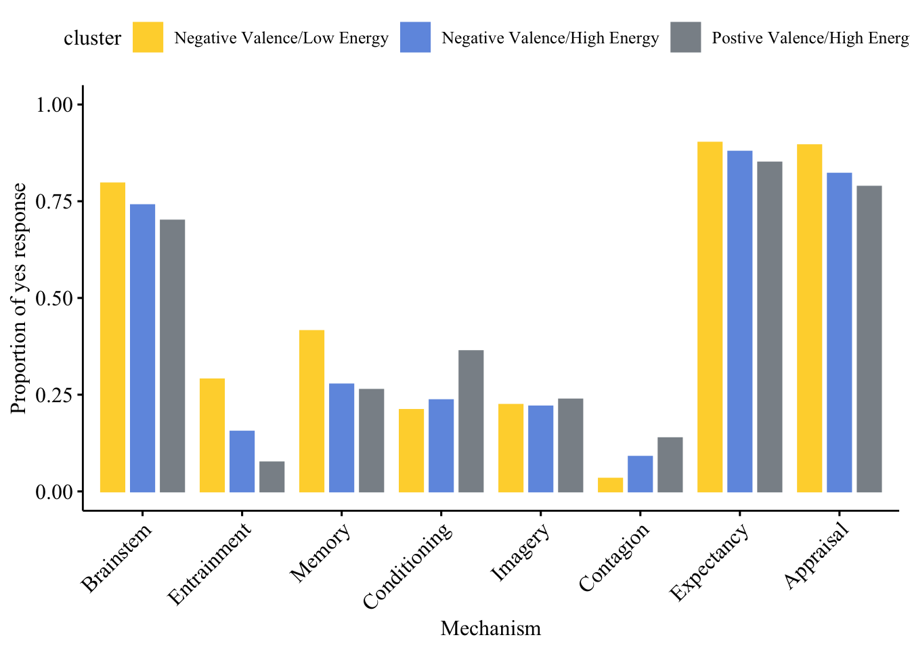
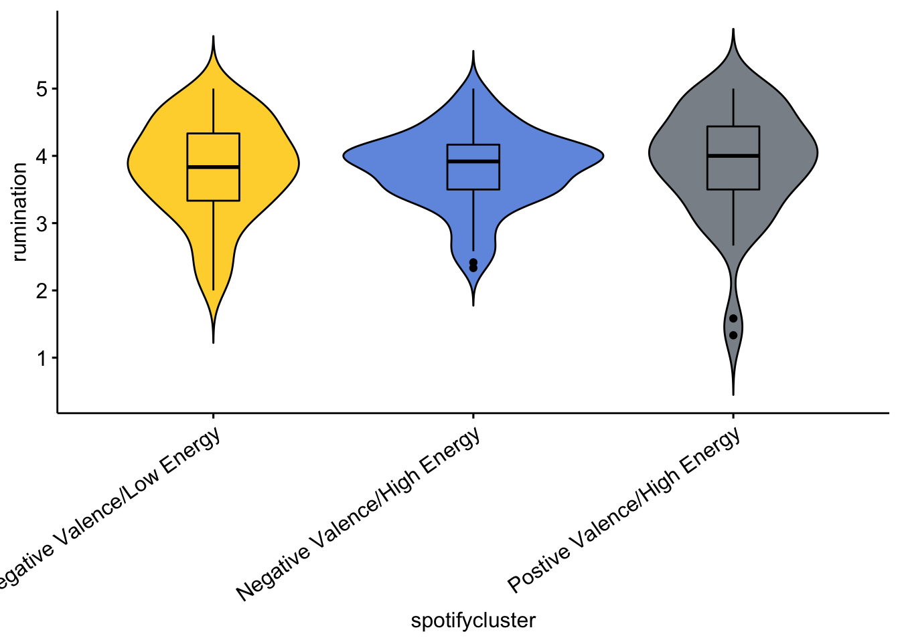
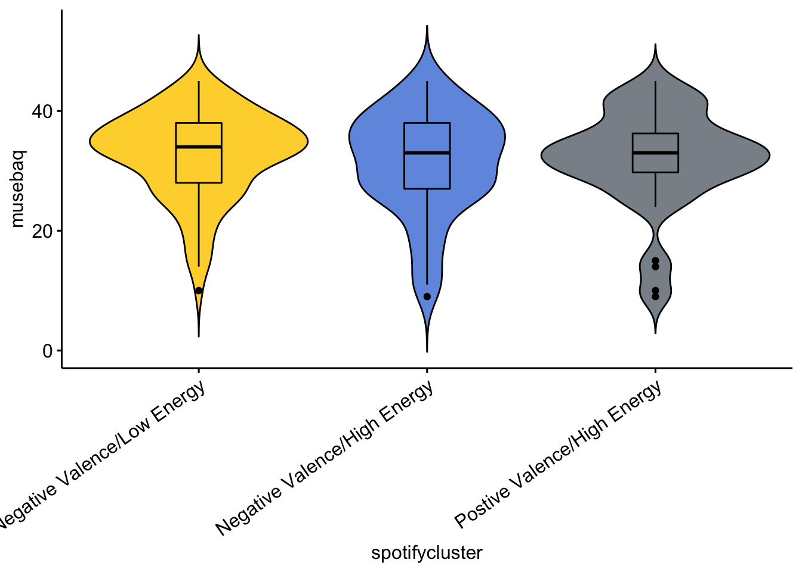
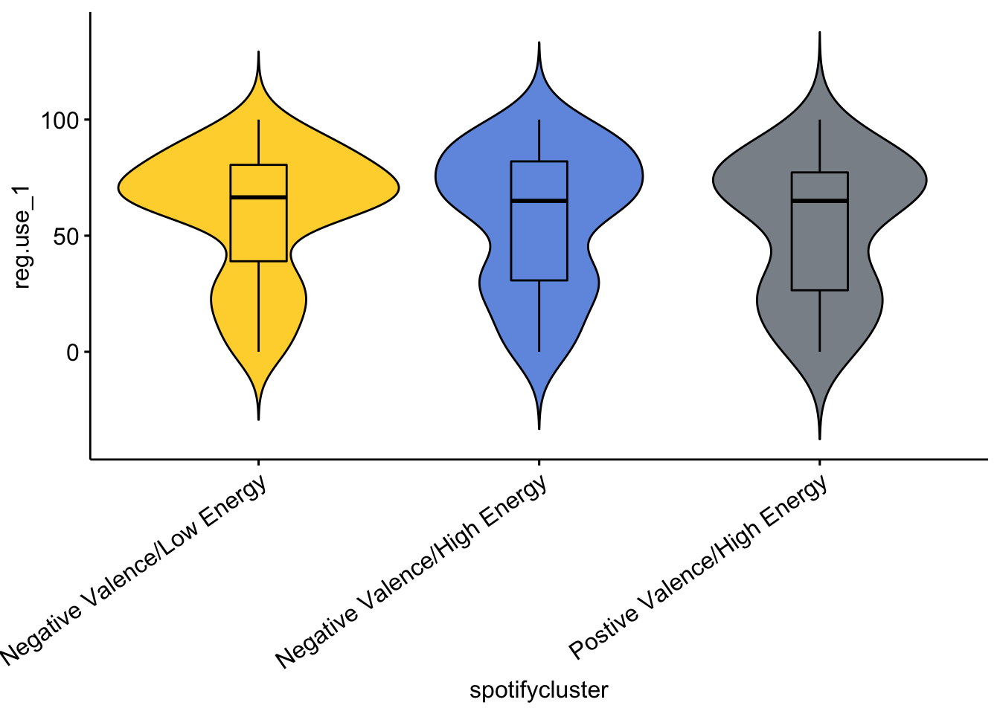
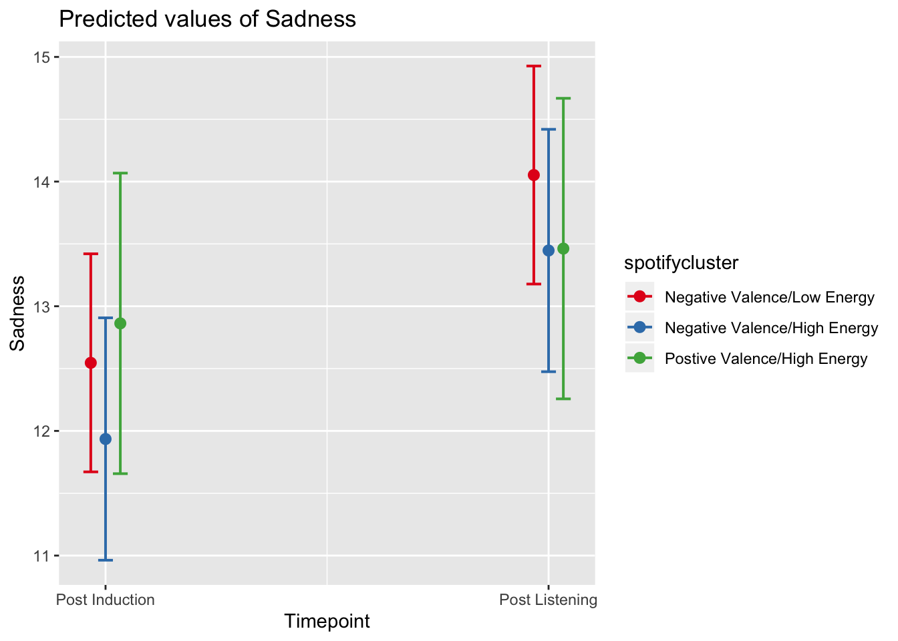

Last updated: 2019-10-06
Checks: 5 2
Knit directory: MusicEmoRegInRumination/
This reproducible R Markdown analysis was created with workflowr (version 1.4.0). The Checks tab describes the reproducibility checks that were applied when the results were created. The Past versions tab lists the development history.
The R Markdown file has unstaged changes. To know which version of the R Markdown file created these results, you’ll want to first commit it to the Git repo. If you’re still working on the analysis, you can ignore this warning. When you’re finished, you can run wflow_publish to commit the R Markdown file and build the HTML.
Great job! The global environment was empty. Objects defined in the global environment can affect the analysis in your R Markdown file in unknown ways. For reproduciblity it’s best to always run the code in an empty environment.
The command set.seed(20190920) was run prior to running the code in the R Markdown file. Setting a seed ensures that any results that rely on randomness, e.g. subsampling or permutations, are reproducible.
Great job! Recording the operating system, R version, and package versions is critical for reproducibility.
To ensure reproducibility of the results, delete the cache directory StudyOneClusterExplore_cache and re-run the analysis. To have workflowr automatically delete the cache directory prior to building the file, set delete_cache = TRUE when running wflow_build() or wflow_publish().
Great job! Using relative paths to the files within your workflowr project makes it easier to run your code on other machines.
Great! You are using Git for version control. Tracking code development and connecting the code version to the results is critical for reproducibility. The version displayed above was the version of the Git repository at the time these results were generated.
Note that you need to be careful to ensure that all relevant files for the analysis have been committed to Git prior to generating the results (you can use wflow_publish or wflow_git_commit). workflowr only checks the R Markdown file, but you know if there are other scripts or data files that it depends on. Below is the status of the Git repository when the results were generated:
Ignored files:
Ignored: .Rhistory
Ignored: .Rproj.user/
Ignored: analysis/StudyOneClusterExplore_cache/
Ignored: analysis/figure/
Untracked files:
Untracked: docs/figure/StudyOneClusterExplore.rmd/
Unstaged changes:
Modified: analysis/StudyOneClusterExplore.rmd
Deleted: analysis/StudyOneLyricsCluster.rmd
Note that any generated files, e.g. HTML, png, CSS, etc., are not included in this status report because it is ok for generated content to have uncommitted changes.
These are the previous versions of the R Markdown and HTML files. If you’ve configured a remote Git repository (see ?wflow_git_remote), click on the hyperlinks in the table below to view them.
| File | Version | Author | Date | Message |
|---|---|---|---|---|
| rmd | 397c571 | Joel Larwood | 2019-10-04 | lyric processing. Cluster processing moved |
library(tidyverse)
s1clusters <- read_csv("data/s1clusters.csv") %>%
mutate(spotifycluster = if_else(KmeansCluster == 1,
"Postive Valence/High Energy",
if_else(KmeansCluster == 2,
"Negative Valence/Low Energy",
"Negative Valence/High Energy")),
spotifycluster = as_factor(spotifycluster))library(ggpubr)
ggpubr::ggscatter(s1clusters,
x = "valence",
y = "energy",
color = "spotifycluster",
star.plot = TRUE,
palette = "simpsons",
legend = "right",
legend.title = "Cluster",
xlab = "Spotify valence metric",
ylab = "Spotify energy metric",
ggtheme = theme_pubr(base_family = "Times New Roman")) +
scale_y_continuous(breaks = c(0, .25, .5, .75, 1)) +
scale_x_continuous(breaks =c(0, .25, .5, .75, 1)
)
library(RVAideMemoire)
s1clusterN <- count(s1clusters, spotifycluster)
chisq.test(s1clusterN$n)
Chi-squared test for given probabilities
data: s1clusterN$n
X-squared = 22.18, df = 2, p-value = 1.526e-05chisq.multcomp(s1clusterN$n)
Pairwise comparisons using chi-squared tests
data: $(s1clusterN,n)
80 123
123 0.0038 -
152 6.8e-06 0.0803
P value adjustment method: fdr ggpubr::ggbarplot(data = s1clusterN,
x = "spotifycluster",
color = "spotifycluster",
fill = "spotifycluster",
legend = "none",
y = "n",
palette = "simpsons",
ylab = "Participants per cluster",
xlab = "Spotify cluster",
xtickslab.rt = 45,
ggtheme = theme_pubr(base_family = "Times New Roman")
) 
MechPropSummary <- s1clusters %>%
drop_na(spotifycluster) %>%
group_by(spotifycluster) %>%
summarize(Brainstem=sum(brainstem=="Yes", na.rm = TRUE)/n(),
Entrainment = sum(Entrainment=="Yes", na.rm = TRUE)/n(),
Memory = sum(Memory=="Yes", na.rm = TRUE)/n(),
Conditioning = sum(Conditioning == "Yes", na.rm = TRUE)/n(),
Imagery = sum(Imagery == "Yes", na.rm = TRUE)/n(),
Contagion = sum(Contagion == "Yes", na.rm = TRUE)/n(),
Expectancy = sum(Expectancy == "Yes", na.rm = TRUE)/n(),
Appraisal = sum(Appraisal == "Yes", na.rm = TRUE)/n()
)
SpreadContingencys1 <- MechPropSummary %>%
mutate(cluster = spotifycluster) %>%
gather(key = spotifycluster,
value = proportion,
Brainstem:Appraisal) %>%
mutate(Mechanism = spotifycluster)
library(tableone)
tableone::CreateCatTable(vars = c("brainstem" ,
"Entrainment" ,
"Memory" ,
"Conditioning" ,
"Imagery" ,
"Contagion" ,
"Expectancy" ,
"Appraisal"),
strata = "KmeansCluster",
data = s1clusters) Stratified by KmeansCluster
1 2 3 p test
n 80 152 123
brainstem = Yes (%) 56 (70.0) 121 (80.1) 91 (74.0) 0.200
Entrainment = Yes (%) 6 ( 7.5) 44 (29.1) 19 (15.6) <0.001
Memory = Yes (%) 21 (26.2) 63 (41.7) 34 (27.9) 0.016
Conditioning = Yes (%) 29 (36.2) 32 (21.2) 29 (23.6) 0.037
Imagery = Yes (%) 19 (24.4) 34 (22.7) 27 (22.0) 0.923
Contagion = Yes (%) 11 (13.8) 5 ( 3.3) 11 ( 8.9) 0.014
Expectancy = Yes (%) 68 (85.0) 137 (90.7) 108 (87.8) 0.418
Appraisal = Yes (%) 63 (78.8) 136 (90.1) 101 (82.1) 0.045 fisher.multcomp(xtabs(~Entrainment + KmeansCluster, data = s1clusters))$p.value 1:2 1:3 2:3
No:Yes 0.0002700572 0.1252424 0.01388287fisher.multcomp(xtabs(~Memory + KmeansCluster, data = s1clusters))$p.value 1:2 1:3 2:3
No:Yes 0.03286604 0.8721948 0.03286604fisher.multcomp(xtabs(~Conditioning + KmeansCluster, data = s1clusters))$p.value 1:2 1:3 2:3
No:Yes 0.0549171 0.08630234 0.6633518fisher.multcomp(xtabs(~Contagion + KmeansCluster, data = s1clusters))$p.value 1:2 1:3 2:3
No:Yes 0.01526043 0.3560863 0.1021131fisher.multcomp(xtabs(~Appraisal + KmeansCluster, data = s1clusters))$p.value 1:2 1:3 2:3
No:Yes 0.07951293 0.5871882 0.112048ggpubr::ggbarplot(data = SpreadContingencys1,
x = "Mechanism",
y = "proportion",
color = "cluster",
fill = "cluster",
position = position_dodge(0.9),
palette = "simpsons",
legend = "top",
xtickslab.rt = 45,
ggtheme = theme_pubr(base_family = "Times New Roman")) +
ggplot2::scale_y_continuous(breaks=c(0, .2,.4,.6,.8,1)) +
ggplot2::ylim(0, 1) +
ggplot2::ylab("Proportion of yes response")
ggpubr::ggviolin(drop_na(s1clusters),
x = "spotifycluster",
y = "rumination",
fill ="spotifycluster",
palette = "simpsons",
legend = "none",
add = "boxplot",
xtickslab.rt = 35,
) +
ggplot2::scale_y_continuous(breaks = c(1,2,3,4,5))
library(afex)
apa::anova_apa(afex::aov_ez(id = "id",
dv = "rumination",
data = s1clusters,
between = "spotifycluster",
#covariate = "musebaq",
type = 3),
es = "ges"
)Warning: Missing values for following ID(s):
273
Removing those cases from the analysis. Effect
1 (Intercept) F(1, 351) = 10024.98, p < .001, getasq = NA ***
2 spotifycluster F(2, 351) = 0.03, p = .971, getasq < .01 ##MUSEBAQ
ggpubr::ggviolin(drop_na(s1clusters),
x = "spotifycluster",
y = "musebaq",
fill ="spotifycluster",
palette = "simpsons",
legend = "none",
add = "boxplot",
xtickslab.rt = 35
) 
apa::anova_apa(afex::aov_ez(id = "id",
dv = "musebaq",
data = s1clusters,
between = "spotifycluster",
type = 3),
es = "ges"
) Effect
1 (Intercept) F(1, 352) = 5725.63, p < .001, getasq = NA ***
2 spotifycluster F(2, 352) = 0.75, p = .471, getasq < .01 ##Likely regulation use
ggpubr::ggviolin(drop_na(s1clusters),
x = "spotifycluster",
y = "reg.use_1",
fill ="spotifycluster",
palette = "simpsons",
legend = "none",
add = "boxplot",
xtickslab.rt = 35,
) 
kruskal.test(reg.use_1 ~ spotifycluster, data = s1clusters)
Kruskal-Wallis rank sum test
data: reg.use_1 by spotifycluster
Kruskal-Wallis chi-squared = 4.1358, df = 2, p-value = 0.1265How do the three different clusters predict sadness
s1ClusterLong <- s1clusters %>%
gather(key = Timepoint,
value = Sadness,
PostInduction,PostListening)
library(lmerTest)
library(sjPlot)
s1ClusterSadness <- lmerTest::lmer(Sadness~1+Timepoint*spotifycluster + (1 |id), data = s1ClusterLong)
tab_model(s1ClusterSadness)| Sadness | |||
|---|---|---|---|
| Predictors | Estimates | CI | p |
| (Intercept) | 12.55 | 11.67 – 13.42 | <0.001 |
| PostListening | 1.51 | 0.93 – 2.08 | <0.001 |
|
Negative Valence/High Energy |
-0.61 | -1.92 – 0.70 | 0.360 |
|
Postive Valence/High Energy |
0.32 | -1.17 – 1.81 | 0.677 |
| TimepointPostListening:spotifyclusterNegative Valence/High Energy | 0.01 | -0.85 – 0.87 | 0.990 |
| TimepointPostListening:spotifyclusterPostive Valence/High Energy | -0.91 | -1.89 – 0.07 | 0.071 |
| Random Effects | |||
| σ2 | 6.55 | ||
| τ00 id | 23.72 | ||
| ICC | 0.78 | ||
| N id | 355 | ||
| Observations | 710 | ||
| Marginal R2 / Conditional R2 | 0.017 / 0.787 | ||
anova(s1ClusterSadness)Type III Analysis of Variance Table with Satterthwaite's method
Sum Sq Mean Sq NumDF DenDF F value Pr(>F)
Timepoint 240.647 240.647 1 352 36.7661 3.434e-09 ***
spotifycluster 6.375 3.187 2 352 0.4870 0.6149
Timepoint:spotifycluster 25.609 12.805 2 352 1.9563 0.1429
---
Signif. codes: 0 '***' 0.001 '**' 0.01 '*' 0.05 '.' 0.1 ' ' 1plot_model(s1ClusterSadness,
type = "int")
emmeans::contrast(emmeans::emmeans(s1ClusterSadness, ~Timepoint*spotifycluster), "pairwise", by = "spotifycluster")spotifycluster = Negative Valence/Low Energy:
contrast estimate SE df t.ratio p.value
PostInduction - PostListening -1.51 0.293 352 -5.134 <.0001
spotifycluster = Negative Valence/High Energy:
contrast estimate SE df t.ratio p.value
PostInduction - PostListening -1.51 0.326 352 -4.635 <.0001
spotifycluster = Postive Valence/High Energy:
contrast estimate SE df t.ratio p.value
PostInduction - PostListening -0.60 0.405 352 -1.483 0.1389 I need to create a tibble with unique artist and song names. Some songs appear multiple times so I want to make sure I only have each song once for when I group_by for sentimment later
library(genius)
TrackTibbleS1 <- s1clusters %>%
distinct(track_uri, .keep_all = TRUE) %>%
select(track_name, artist_name, spotifycluster, track_uri)This script pulls the lyrics on a ine by line basis for all songs that can be found on Genius
S1Lyrics <- TrackTibbleS1 %>%
genius::add_genius(artist = artist_name,
title = track_name,
type = "lyrics") %>%
unite(track_artist,
track_name, artist_name,
sep = "_",
remove = FALSE) %>%
drop_na(lyric)Warning in request_GET(session, url): Not Found (HTTP 404).
Warning in request_GET(session, url): Not Found (HTTP 404).
Warning in request_GET(session, url): Not Found (HTTP 404).
Warning in request_GET(session, url): Not Found (HTTP 404).
Warning in request_GET(session, url): Not Found (HTTP 404).
Warning in request_GET(session, url): Not Found (HTTP 404).
Warning in request_GET(session, url): Not Found (HTTP 404).
Warning in request_GET(session, url): Not Found (HTTP 404).
Warning in request_GET(session, url): Not Found (HTTP 404).
Warning in request_GET(session, url): Not Found (HTTP 404).
Warning in request_GET(session, url): Not Found (HTTP 404).
Warning in request_GET(session, url): Not Found (HTTP 404).
Warning in request_GET(session, url): Not Found (HTTP 404).
Warning in request_GET(session, url): Not Found (HTTP 404).
Warning in request_GET(session, url): Not Found (HTTP 404).
Warning in request_GET(session, url): Not Found (HTTP 404).
Warning in request_GET(session, url): Not Found (HTTP 404).
Warning in request_GET(session, url): Not Found (HTTP 404).
Warning in request_GET(session, url): Not Found (HTTP 404).
Warning in request_GET(session, url): Not Found (HTTP 404).
Warning in request_GET(session, url): Not Found (HTTP 404).
Warning in request_GET(session, url): Not Found (HTTP 404).
Warning in request_GET(session, url): Not Found (HTTP 404).
Warning in request_GET(session, url): Not Found (HTTP 404).
Warning in request_GET(session, url): Not Found (HTTP 404).
Warning in request_GET(session, url): Not Found (HTTP 404).
Warning in request_GET(session, url): Not Found (HTTP 404).
Warning in request_GET(session, url): Not Found (HTTP 404).
Warning in request_GET(session, url): Not Found (HTTP 404).
Warning in request_GET(session, url): Not Found (HTTP 404).
Warning in request_GET(session, url): Not Found (HTTP 404).
Warning in request_GET(session, url): Not Found (HTTP 404).
Warning in request_GET(session, url): Not Found (HTTP 404).
Warning in request_GET(session, url): Not Found (HTTP 404).
Warning in request_GET(session, url): Not Found (HTTP 404).
Warning in request_GET(session, url): Not Found (HTTP 404).
Warning in request_GET(session, url): Not Found (HTTP 404).
Warning in request_GET(session, url): Not Found (HTTP 404).
Warning in request_GET(session, url): Not Found (HTTP 404).
Warning in request_GET(session, url): Not Found (HTTP 404).
Warning in request_GET(session, url): Not Found (HTTP 404).
Warning in request_GET(session, url): Not Found (HTTP 404).
Warning in request_GET(session, url): Not Found (HTTP 404).
Warning in request_GET(session, url): Not Found (HTTP 404).
Warning in request_GET(session, url): Not Found (HTTP 404).
Warning in request_GET(session, url): Not Found (HTTP 404).
Warning in request_GET(session, url): Not Found (HTTP 404).
Warning in request_GET(session, url): Not Found (HTTP 404).
Warning in request_GET(session, url): Not Found (HTTP 404).
Warning in request_GET(session, url): Not Found (HTTP 404).
Warning in request_GET(session, url): Not Found (HTTP 404).
Warning in request_GET(session, url): Not Found (HTTP 404).
Warning in request_GET(session, url): Not Found (HTTP 404).songsreturned <- dplyr::n_distinct(S1Lyrics$track_artist)
songsinput <- dplyr::n_distinct(TrackTibbleS1$track_uri)The script found 230 tracks out of the 286
Now that I have the lyrics I need to put them into a tidytext fromat where there is a single word for every row. From this I can group by the song and calculate a sentiment.
library(tidytext)
S1LyricsUnnest <- S1Lyrics %>%
tidytext::unnest_tokens(word, lyric)
sessionInfo()R version 3.6.1 (2019-07-05)
Platform: x86_64-apple-darwin15.6.0 (64-bit)
Running under: macOS Mojave 10.14.6
Matrix products: default
BLAS: /Library/Frameworks/R.framework/Versions/3.6/Resources/lib/libRblas.0.dylib
LAPACK: /Library/Frameworks/R.framework/Versions/3.6/Resources/lib/libRlapack.dylib
locale:
[1] en_AU.UTF-8/en_AU.UTF-8/en_AU.UTF-8/C/en_AU.UTF-8/en_AU.UTF-8
attached base packages:
[1] stats graphics grDevices utils datasets methods base
other attached packages:
[1] tidytext_0.2.2 genius_2.2.0 sjPlot_2.7.0
[4] lmerTest_3.1-0 afex_0.24-1 lme4_1.1-21
[7] Matrix_1.2-17 tableone_0.10.0 RVAideMemoire_0.9-73
[10] ggpubr_0.2.3 magrittr_1.5 forcats_0.4.0
[13] stringr_1.4.0 dplyr_0.8.3 purrr_0.3.2
[16] readr_1.3.1 tidyr_0.8.3 tibble_2.1.3
[19] ggplot2_3.2.0 tidyverse_1.2.1
loaded via a namespace (and not attached):
[1] TH.data_1.0-10 minqa_1.2.4 colorspace_1.4-1
[4] selectr_0.4-1 ggsignif_0.6.0 ellipsis_0.2.0.1
[7] rio_0.5.16 sjlabelled_1.1.0 rprojroot_1.3-2
[10] estimability_1.3 fs_1.3.1 rstudioapi_0.10
[13] glmmTMB_0.2.3 SnowballC_0.6.0 ggrepel_0.8.1
[16] mvtnorm_1.0-11 lubridate_1.7.4 xml2_1.2.1
[19] codetools_0.2-16 splines_3.6.1 mnormt_1.5-5
[22] knitr_1.24 sjmisc_2.8.1 zeallot_0.1.0
[25] jsonlite_1.6 workflowr_1.4.0 nloptr_1.2.1
[28] ggeffects_0.11.0 pbkrtest_0.4-7 broom_0.5.2
[31] compiler_3.6.1 httr_1.4.0 sjstats_0.17.5
[34] emmeans_1.4 backports_1.1.4 assertthat_0.2.1
[37] lazyeval_0.2.2 survey_3.36 cli_1.1.0
[40] htmltools_0.3.6 tools_3.6.1 gtable_0.3.0
[43] glue_1.3.1 reshape2_1.4.3 Rcpp_1.0.2
[46] carData_3.0-2 apa_0.3.2 cellranger_1.1.0
[49] vctrs_0.2.0 nlme_3.1-140 psych_1.8.12
[52] insight_0.4.1 xfun_0.8 openxlsx_4.1.0.1
[55] rvest_0.3.4 MASS_7.3-51.4 zoo_1.8-6
[58] scales_1.0.0 hms_0.5.0 parallel_3.6.1
[61] sandwich_2.5-1 RColorBrewer_1.1-2 TMB_1.7.15
[64] yaml_2.2.0 curl_4.0 stringi_1.4.3
[67] bayestestR_0.2.2 tokenizers_0.2.1 boot_1.3-23
[70] zip_2.0.3 rlang_0.4.0 pkgconfig_2.0.2
[73] evaluate_0.14 lattice_0.20-38 labeling_0.3
[76] tidyselect_0.2.5 ggsci_2.9 plyr_1.8.4
[79] R6_2.4.0 generics_0.0.2 multcomp_1.4-10
[82] DBI_1.0.0 pillar_1.4.2 haven_2.1.1
[85] whisker_0.3-2 foreign_0.8-71 withr_2.1.2
[88] survival_2.44-1.1 abind_1.4-5 performance_0.2.0
[91] janeaustenr_0.1.5 modelr_0.1.4 crayon_1.3.4
[94] car_3.0-3 rmarkdown_1.14 grid_3.6.1
[97] readxl_1.3.1 data.table_1.12.2 git2r_0.26.1
[100] digest_0.6.20 xtable_1.8-4 numDeriv_2016.8-1.1
[103] munsell_0.5.0 mitools_2.4